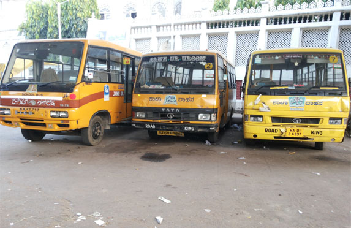
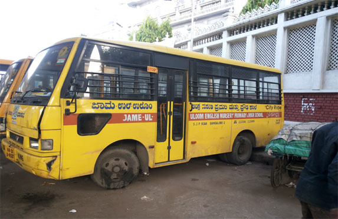
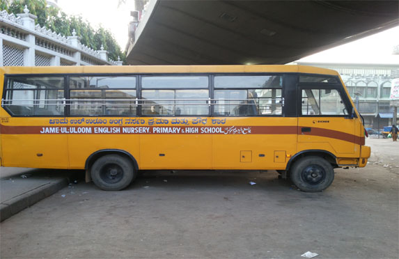
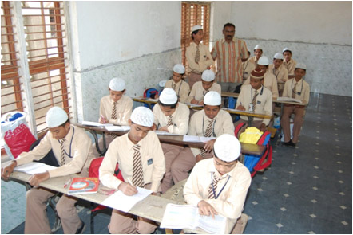
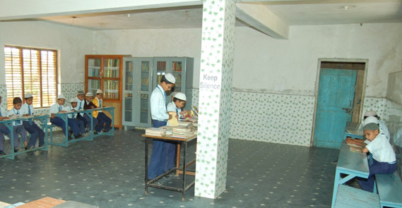
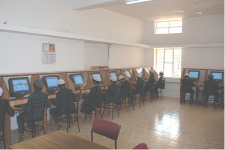
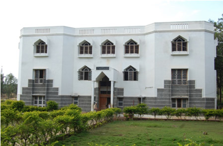
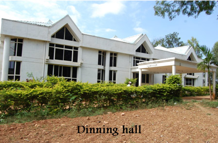

Home / Facilities
Transport & Campus Facilities
School buses, and campus facilities across the Jame-ul-Uloom Group of Institutions.
-
City Market Central Campus
Located at S.J.P. Road, City Market, in the heart of Bangalore, on the campus of Jamia Masjid.
Central contact directory → -
Science Laboratories
Physics, Chemistry and Biology laboratories: the PU College’s, and the Banikuppa campus’s.
Science Labs → -
Banikuppa Residential Campus
On the Bangalore–Mysore highway; the distance from the city is given differently on different pages of this website. See the campus’s own facilities pages.
Banikuppa facilities →
School buses
Photographs of the school buses. The Admissions Diary 2013–14 lists the rules for students travelling by bus or van; see School Discipline.
-

School buses -

School bus -

School bus
Campus facilities in pictures
Teaching and residential facilities at the Banikuppa residential campus.
-

ClassroomBanikuppa residential campus -

LibraryBanikuppa residential campus -

Computer laboratoryBanikuppa residential campus -

Hostel buildingBanikuppa residential campus -

Dining hallBanikuppa residential campus